Look n°18
Salon de Noël cosy rouge et blanc
Un salon de Noël tout doux : canapé arrondi et fauteuils ronds en bouclette, coussins à flocons rouges, velours bordeaux, roses et cheminée électrique sous un miroir lumineux. Voici les articles pour recréer ce look chez toi.
Prix au 07/11/2026
-
Canapé incurvé en bouclette ivoire
Canapé 3 places en demi-lune, bouclette blanc ivoire, bouts arrondis, dossier bas enveloppant.
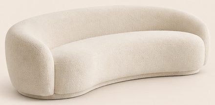
883,99 €Voir sur Amazon -
Fauteuil rond en bouclette blanche
78 × 88 × 70 cm, coque arrondie enveloppante, pivotant. L'image en montre 2.
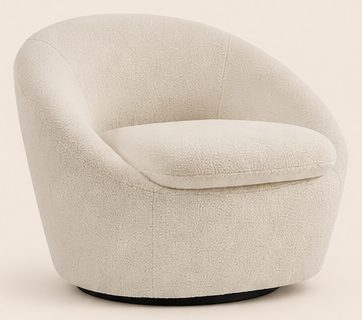
291,99 € (×2)Voir sur Amazon -
Table basse ronde cannelée et tables d'appoint à plateau bois
Table basse ronde blanc crème, Ø 78,5 × H 35 cm, côtés cannelés. Tables d'appoint KANEL (lot de 2), pied cannelé et plateau effet bois clair : la grande (Ø 45 × H 35 cm) correspond à celle du premier plan, la petite (Ø 40 × H 30 cm) est en plus. Sur l'image, la table basse est un cylindre cannelé à plateau en bois clair, d'environ 70 cm ; la vraie a un épais plateau cannelé blanc posé sur un pied plus étroit. Le pied des tables d'appoint est beige, pas blanc.
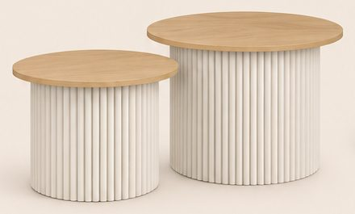
-
Meuble TV suspendu blanc avec cheminée électrique
200 × 45 × 35 cm, blanc, cheminée électrique au centre, se fixe au mur. Sur l'image, le cadre noir se limite à la vitre des flammes ; sur le vrai meuble, tout le module central est noir.
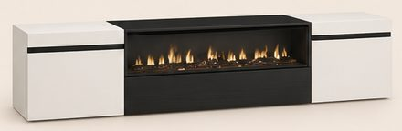
-
Miroir arche lumineux LED mural
60 cm de large et 100 cm de haut, sans cadre, contour LED blanc chaud, à accrocher au mur. Sur l'image, le miroir paraît bien plus large (environ 1 m de large pour 1,15 m de haut) : c'est le plus grand miroir arche LED de ce style sur Amazon.
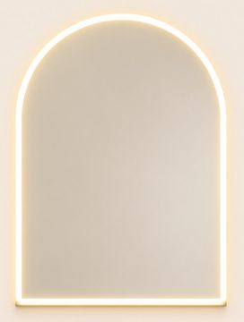
-
Tapis crème à relief en arches
200 × 290 cm, effet 3D, lavable.
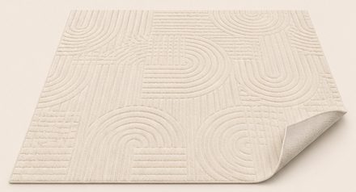
119,99 €Voir sur Amazon -
Olivier artificiel 150 cm et pot blanc mat
Olivier de 150 cm ; pot blanc mat H 45 cm Ø 47 cm. L'image en montre 2. Sur l'image, le pot est plus étroit (environ 30 cm) et en forme d'œuf allongé, plus fin en bas et plus large vers le haut ; le vrai est un cylindre droit.
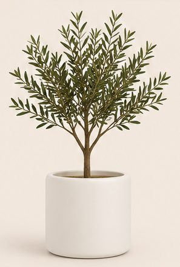
-
Coussins blancs à flocons rouges et coussins velours bordeaux
Housses 45 × 45 cm blanches à flocons rouges et housses 45 × 45 cm en velours bordeaux (lots de 2 ; l'image en montre 4 de chaque). Sur l'image, chaque coussin blanc porte un grand flocon brodé au centre ; les vrais ont plusieurs flocons imprimés.
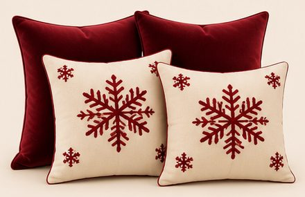
11,99 € (×2) + 18,79 € (×2)Voir les coussins à floconsVoir les coussins bordeauxArticle proche de celui de l'image -
Plaid bordeaux effet fourrure côtelée
150 × 200 cm, très doux.
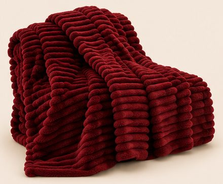
34,99 €Voir sur Amazon -
Roses bordeaux et vase boule en verre
Lot de 12 roses de 50 cm ; vase boule Ø 20 cm. L'image montre 2 bouquets.
-
Bougies LED ivoire sous verre (lot de 5)
Flamme vacillante, télécommande.
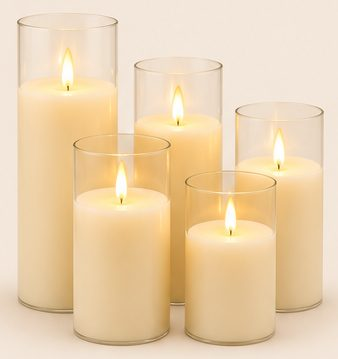
34,18 €Voir sur Amazon -
Voilage blanc effet lin
140 × 240 cm, à œillets. L'image en montre 4.
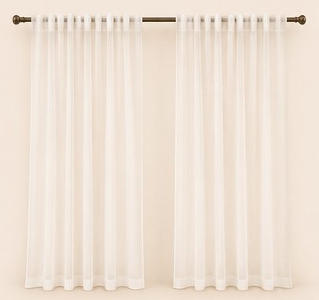
19,99 € (×4)Voir sur Amazon -
Guirlandes de sapin 180 cm (lot de 2)
2 × 180 cm, branches vertes réalistes.
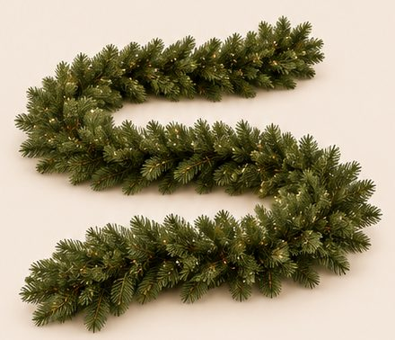
34,99 €Voir sur Amazon -
Ruban LED COB blanc chaud 10 m
2700 K, lumière continue, télécommande.
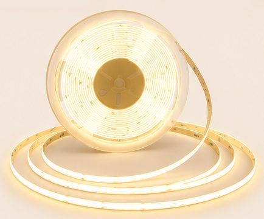
51,99 €Voir sur Amazon
Enregistrer ce look sur Pinterest
Image d'inspiration générée par IA. Prix indicatifs, revérifiés toutes les deux semaines.